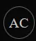
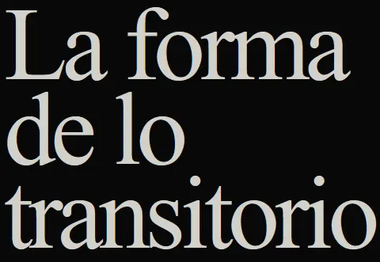
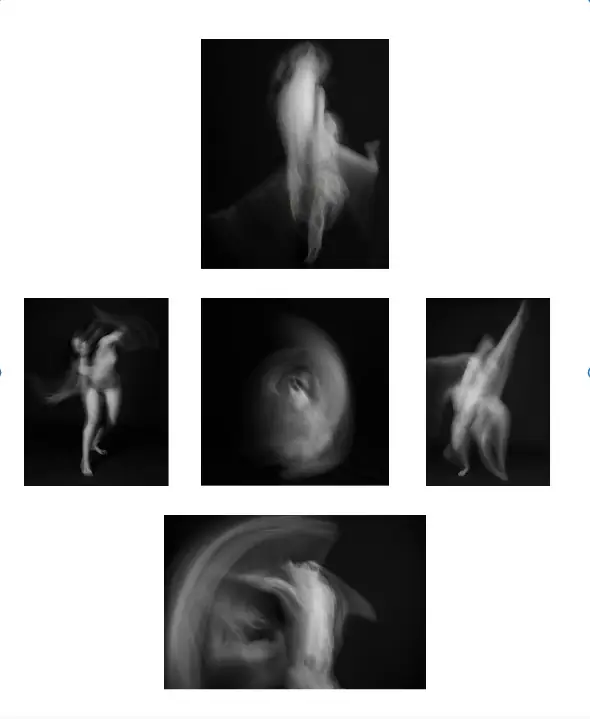

 |
INICIO ACERCA DE MATERIAL EXTRA COMENTARIOS |
|
PROYECTO OTOGRÁFICO · 2026  Una exploración sobre el cuerpo, el movimiento y laduración. La fotografía deja de contener un instante para conservar el tiempo durante el cual estuvo formándose.
EXPLORAR LA PIEZA → |
 Composición de cinco fotografías digitales |